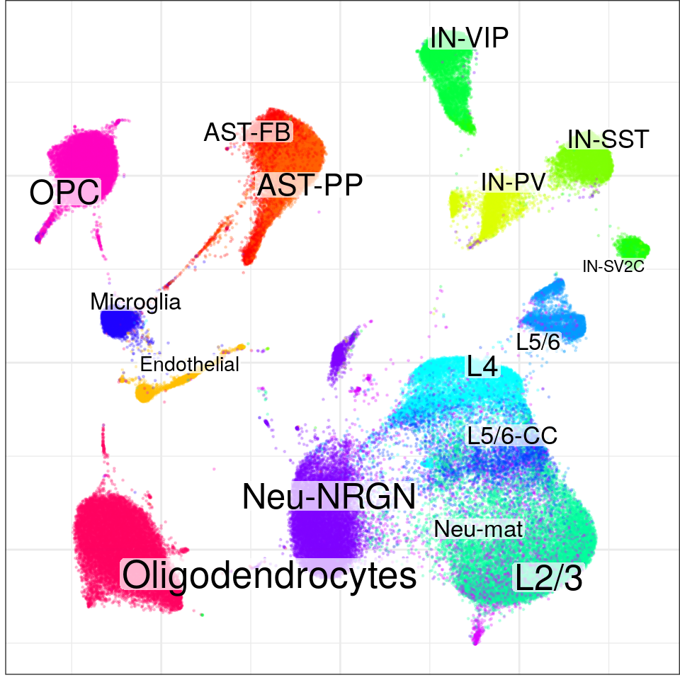
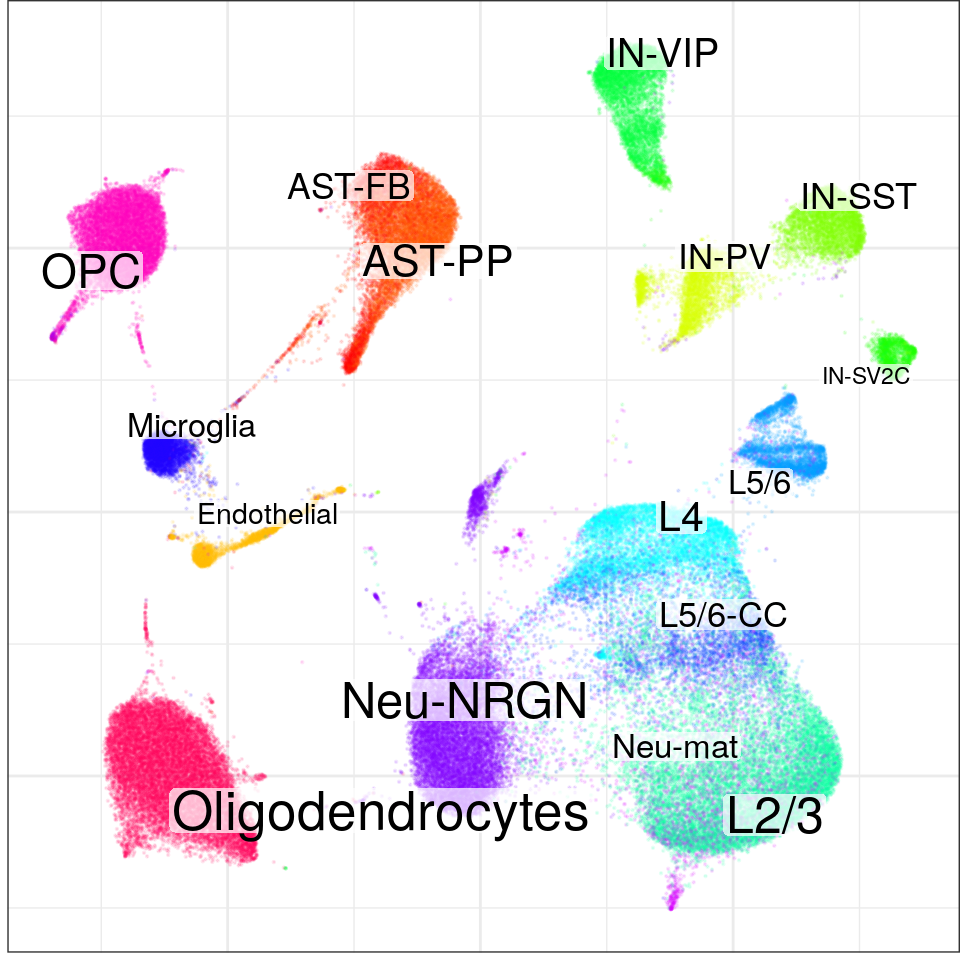
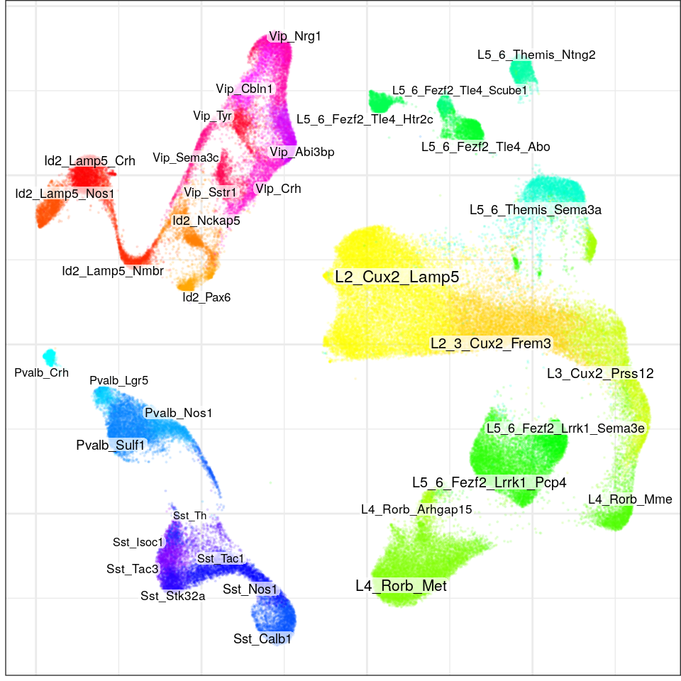
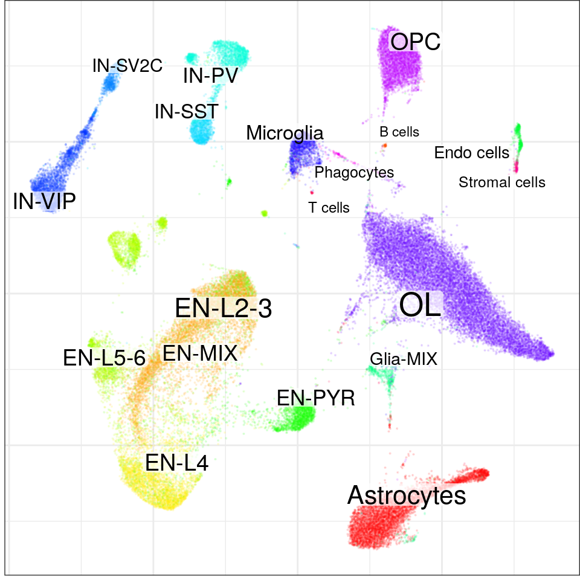
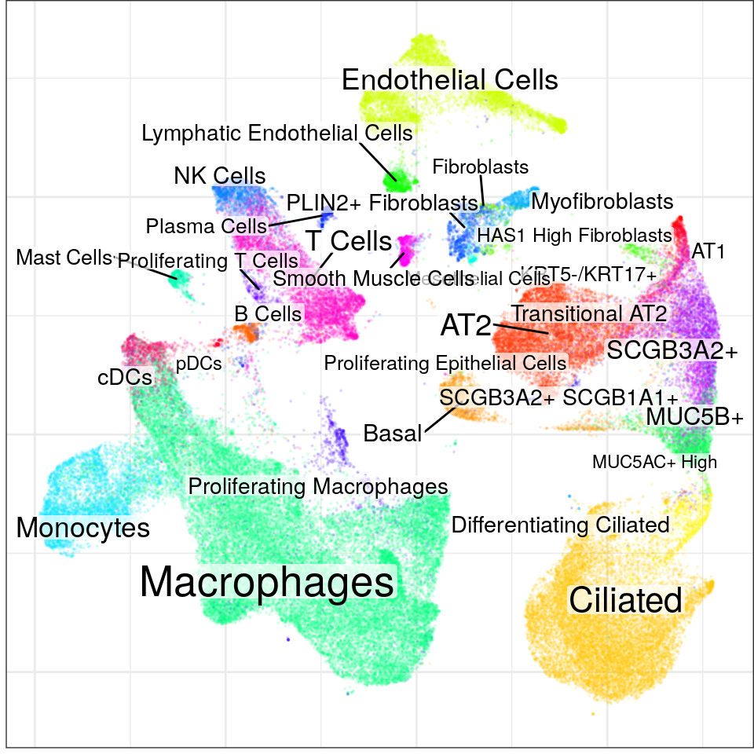
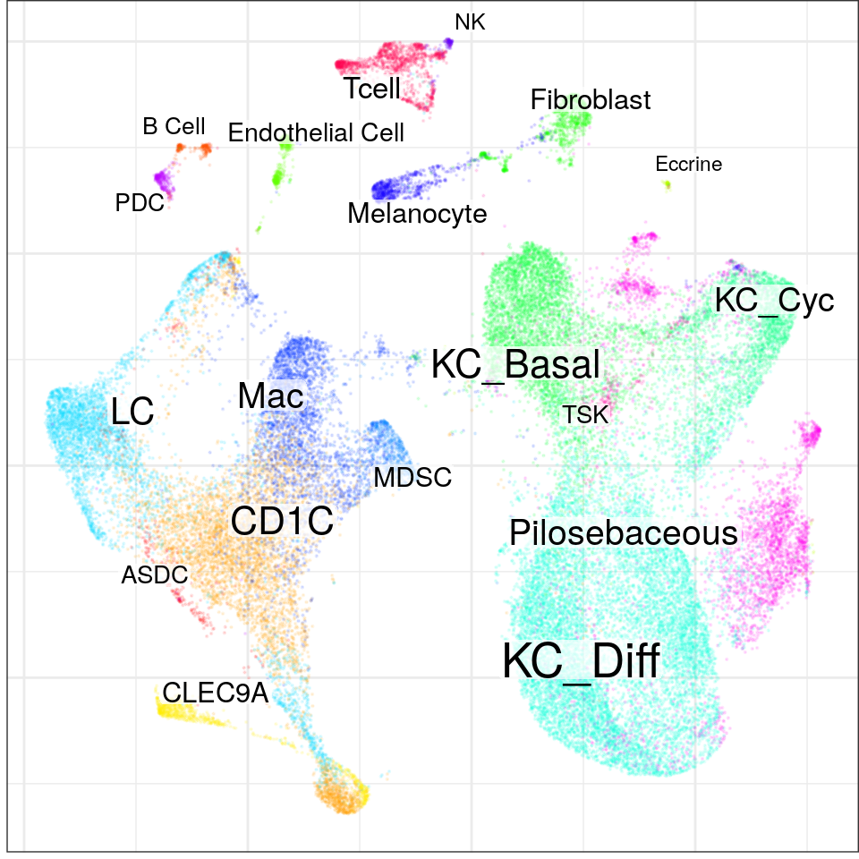

Last updated: 2021-11-30
Checks: 7 0
Knit directory: cacoaAnalysis/
This reproducible R Markdown analysis was created with workflowr (version 1.6.2). The Checks tab describes the reproducibility checks that were applied when the results were created. The Past versions tab lists the development history.
Great! Since the R Markdown file has been committed to the Git repository, you know the exact version of the code that produced these results.
Great job! The global environment was empty. Objects defined in the global environment can affect the analysis in your R Markdown file in unknown ways. For reproduciblity it's best to always run the code in an empty environment.
The command set.seed(20211123) was run prior to running the code in the R Markdown file. Setting a seed ensures that any results that rely on randomness, e.g. subsampling or permutations, are reproducible.
Great job! Recording the operating system, R version, and package versions is critical for reproducibility.
Nice! There were no cached chunks for this analysis, so you can be confident that you successfully produced the results during this run.
Great job! Using relative paths to the files within your workflowr project makes it easier to run your code on other machines.
Great! You are using Git for version control. Tracking code development and connecting the code version to the results is critical for reproducibility.
The results in this page were generated with repository version 3f1371c. See the Past versions tab to see a history of the changes made to the R Markdown and HTML files.
Note that you need to be careful to ensure that all relevant files for the analysis have been committed to Git prior to generating the results (you can use wflow_publish or wflow_git_commit). workflowr only checks the R Markdown file, but you know if there are other scripts or data files that it depends on. Below is the status of the Git repository when the results were generated:
Ignored files:
Ignored: .Rhistory
Ignored: .Rproj.user/
Ignored: analysis/.Rhistory
Ignored: analysis/de_figure_ep.nb.html
Ignored: analysis/figure/
Ignored: analysis/preprocess.nb.html
Ignored: analysis/site_libs/
Ignored: data/ASD/
Ignored: data/AZ/
Ignored: data/EP/
Ignored: data/MS/
Ignored: data/PF/
Ignored: data/SCC/
Ignored: man/
Untracked files:
Untracked: analysis/cluster_free_de_pf.Rmd
Untracked: analysis/de_figure_ep.Rmd
Untracked: analysis/fig_cluster_free_de.Rmd
Untracked: cache/
Note that any generated files, e.g. HTML, png, CSS, etc., are not included in this status report because it is ok for generated content to have uncommitted changes.
These are the previous versions of the repository in which changes were made to the R Markdown (analysis/preprocess.Rmd) and HTML (docs/preprocess.html) files. If you've configured a remote Git repository (see ?wflow_git_remote), click on the hyperlinks in the table below to view the files as they were in that past version.
| File | Version | Author | Date | Message |
|---|---|---|---|---|
| Rmd | 3f1371c | viktor_petukhov | 2021-11-30 | Cleaner preprocessing |
| Rmd | 1d802ad | viktor_petukhov | 2021-11-30 | Force rebuild in preprocess.Rmd |
| Rmd | 2212721 | viktor_petukhov | 2021-11-30 | Small fix in SCC preprocessing |
| html | 3085bf5 | viktor_petukhov | 2021-11-30 | Build preprocessing.html |
| Rmd | 70d2759 | viktor_petukhov | 2021-11-30 | Preprocessing notebook |
library(tidyverse)
library(magrittr)
library(sccore)
library(pagoda2)
library(conos)
library(dataorganizer)
library(Matrix)
library(reticulate)
devtools::load_all()
N_CORES <- 45
FORCE <- TRUEvirtualenv_create("r-scrublet")virtualenv: r-scrubletvirtualenv_install("r-scrublet", c("scrublet", "matplotlib"))Using virtual environment 'r-scrublet' ...use_virtualenv("r-scrublet")
mpl <- import("matplotlib")
mpl$use('Agg') # Otherwise it shows Qt error in RStudio
scrublet <- import("scrublet")
estimateDoubletInfo <- function(mats, progress=FALSE) {
dub.info <- sccore::plapply(mats, function(m) {
suppressMessages(scrublet$Scrublet(t(m), random_state=as.integer(42))$scrub_doublets()) %>%
lapply(setNames, colnames(m))
}, n.cores=1, progress=progress)
lapply(c(scores=1, mask=2), function(i) {
lapply(dub.info, `[[`, i) %>% unname() %>% unlist()
})
}Cells are already filtered by mit. fraction, and doublets are removed. We filter only by minimum 500 UMIs per cell and scrublet scores.
con <- readOrCreate(DataPath('ASD/con.rds'), function() {
mat <- DataPath("AZ/cell_counts.csv") %>% data.table::fread(sep=",") %>%
{set_rownames(mltools::sparsify(.[, 2:ncol(.)]), .$V1)} %>%
.[rowSums(. > 0) >= 10,]
cell.metadata <- DataPath("AZ/cell_metadata.csv") %>% read_delim(delim='\t') %>%
rename(cell=sampleID, sample=patient) %>%
select(cell, batch, sample, sex, cellType, subclustID) %>%
filter(!grepl("un", sample), !(cellType %in% c('doublet', 'unID')))
sample.metadata <- group_by(cell.metadata, batch, sample, sex) %>%
summarise(n=n()) %>% select(-n) %>% lapply(setNames, .$sample)
cell.metadata %<>% lapply(setNames, .$cell)
mat.per.samp <- splitMatrixByFactor(mat, cell.metadata$sample)
dub.info <- estimateDoubletInfo(mat.per.samp)
p2s <- plapply(mat.per.samp, createPagoda, min.transcripts.per.cell=500, dub.scores=dub.info$scores,
dub.threshold=0.3, mc.preschedule=TRUE, n.cores=N_CORES, progress=FALSE)
createConos(p2s, sample.meta=sample.metadata, cell.meta=cell.metadata, n.cores=N_CORES)
}, force=FORCE) %>% Conos$new().con$plotGraph(groups=con$misc$cell_metadata$cellType, size=0.2, alpha=0.2)
| Version | Author | Date |
|---|---|---|
| 3085bf5 | viktor_petukhov | 2021-11-30 |
rm(con); gc(); used (Mb) gc trigger (Mb) max used (Mb)
Ncells 4464430 238.5 8419650 449.7 8419650 449.7
Vcells 16905049 129.0 274219120 2092.2 535584051 4086.2Cells are already filtered by mitochondrial fraction of 0.05 and UMI threshold ~500, no additional filtration is needed.
con <- readOrCreate(DataPath('ASD/con.rds'), function() {
mat <- Seurat::Read10X(DataPath("ASD")) %>% .[rowSums(. > 0) >= 10,]
meta <- read_delim(DataPath("ASD/meta.txt"), delim='\t') %>%
rename(cellType=cluster, PMI=`post-mortem interval (hours)`) %>%
mutate(cellType=gsub("-I(I)?", "", cellType))
sample.metadata <- meta %>%
group_by(sample, individual, region, age, sex, diagnosis, Capbatch, Seqbatch) %>%
summarise(PMI=median(PMI)) %>% lapply(setNames, .$sample)
sample.metadata$region_hr <- sample.metadata$sample %>% strsplit('_') %>% sapply(`[[`, 2)
cell.metadata <- meta %>% lapply(setNames, .$cell)
mat.per.samp <- splitMatrixByFactor(mat, cell.metadata$sample)
mat.per.cap <- splitMatrixByFactor(mat, cell.metadata$Capbatch)
dub.info <- estimateDoubletInfo(mat.per.cap)
p2s <- plapply(mat.per.samp, createPagoda, dub.scores=dub.info$scores, dub.threshold=0.17,
mc.preschedule=TRUE, n.cores=N_CORES, progress=FALSE)
createConos(p2s, sample.meta=sample.metadata, cell.meta=cell.metadata, n.cores=N_CORES)
}, force=FORCE) %>% Conos$new().con$plotGraph(groups=con$misc$cell_metadata$cellType, size=0.1, alpha=0.1)
| Version | Author | Date |
|---|---|---|
| 3085bf5 | viktor_petukhov | 2021-11-30 |
rm(con); gc(); used (Mb) gc trigger (Mb) max used (Mb)
Ncells 5089547 271.9 15090983 806.0 32790919 1751.3
Vcells 93770050 715.5 3360870642 25641.5 3138941721 23948.3con <- readOrCreate(DataPath('EP/con.rds'), function() {
con.pap <- read_rds(DataPath("EP/con_filt_samples.rds")) %>% conos::Conos$new()
cell.metadata <- DataPath("EP/annotation.csv") %>% read_csv() %>%
rename(cellType=l4) %>% lapply(setNames, .$cell)
sample.metadata <- DataPath("EP/sample_info.csv") %>% read_csv() %>% lapply(setNames, .$Alias)
con.pap$samples %>% lapply(pagoda2::Pagoda2$new) %>%
createConos(sample.meta=sample.metadata, cell.meta=cell.metadata, k=40, n.cores=N_CORES)
}, force=FORCE) %>% Conos$new().con$plotGraph(groups=con$misc$cell_metadata$cellType, size=0.1, alpha=0.1, font.size=c(2, 3))
| Version | Author | Date |
|---|---|---|
| 3085bf5 | viktor_petukhov | 2021-11-30 |
rm(con); gc(); used (Mb) gc trigger (Mb) max used (Mb)
Ncells 5127848 273.9 15194756 811.5 36745925 1962.5
Vcells 88913614 678.4 2150957212 16410.6 3138941721 23948.3The threshold on transcripts here is set only because there was 1 almost empty cell reported, all other cells already had enough transcripts.
con <- readOrCreate(DataPath('MS/con.rds'), function() {
mat <- Seurat::Read10X(DataPath("MS")) %>% .[rowSums(. > 0) >= 10,]
meta <- read_delim(DataPath("MS/meta.txt"), delim='\t') %>%
mutate(cell_type=gsub("-(Cntl|MS(-1|-2)?)", "", x=cell_type)) %>%
rename(cellType=cell_type)
sample.metadata <- meta[,5:14] %>% split(.$sample) %>% lapply(`[`, 1,) %>%
do.call(rbind, .) %>% lapply(setNames, .$sample)
cell.metadata <- meta %>% lapply(setNames, .$cell)
mat.per.samp <- splitMatrixByFactor(mat, cell.metadata$sample)
mat.per.cap <- splitMatrixByFactor(mat, cell.metadata$Capbatch)
dub.info <- estimateDoubletInfo(mat.per.cap)
p2s <- plapply(mat.per.samp, createPagoda, min.transcripts.per.cell=800, dub.scores=dub.info$scores,
dub.threshold=0.2, mc.preschedule=TRUE, n.cores=N_CORES, progress=FALSE)
createConos(p2s, sample.meta=sample.metadata, cell.meta=cell.metadata, n.cores=N_CORES)
}, force=FORCE) %>% Conos$new().con$plotGraph(groups=con$misc$cell_metadata$cellType, size=0.1, alpha=0.1)
| Version | Author | Date |
|---|---|---|
| 3085bf5 | viktor_petukhov | 2021-11-30 |
rm(con); gc(); used (Mb) gc trigger (Mb) max used (Mb)
Ncells 5078468 271.3 15194756 811.5 36745925 1962.5
Vcells 47645373 363.6 1720765770 13128.5 3138941721 23948.3The paper already performed the filtration
con <- readOrCreate(DataPath('PF/con.rds'), function() {
cell.metadata <- read_csv(DataPath("PF/cell_metadata.csv")) %>% rename(cell=X1) %>%
filter(Diagnosis %in% c("Control", "IPF")) %>%
rename(sample=Sample_Name, cellType=celltype)
sample.metadata <- cell.metadata %>%
group_by(sample, Sample_Source, Diagnosis, Status, orig.ident) %>%
summarise(n=n()) %>% select(-n) %>%
lapply(setNames, .$sample)
mat <- DataPath("PF") %>% Seurat::Read10X(gene.column=1) %>%
.[,cell.metadata$cell] %>% .[rowSums(. > 0) >= 10,]
cell.metadata %<>% lapply(setNames, .$cell)
mat.per.samp <- splitMatrixByFactor(mat, cell.metadata$sample)
p2s <- plapply(mat.per.samp, createPagoda, mc.preschedule=TRUE, n.cores=N_CORES, progress=FALSE)
createConos(p2s, sample.meta=sample.metadata, cell.meta=cell.metadata, n.cores=N_CORES)
}, force=FORCE) %>% Conos$new()Warning: Missing column names filled in: 'X1' [1]
-- Column specification --------------------------------------------------------
cols(
X1 = col_character(),
orig.ident = col_character(),
nCount_RNA = col_double(),
nFeature_RNA = col_double(),
Diagnosis = col_character(),
Sample_Name = col_character(),
Sample_Source = col_character(),
Status = col_character(),
percent.mt = col_double(),
nCount_SCT = col_double(),
nFeature_SCT = col_double(),
seurat_clusters = col_double(),
population = col_character(),
celltype = col_character()
)`summarise()` has grouped output by 'sample', 'Sample_Source', 'Diagnosis', 'Status'. You can override using the `.groups` argument.found 0 out of 231 cached PCA space pairs ... running 231 additional PCA space pairs doneinter-sample links using mNN donelocal pairs donebuilding graph ..doneWarning in embedKnnGraph(commute.times, n.neighbors = n.neighbors, names = adj.info$names, : Maximal number of estimated neighbors is 27. Consider increasing min.visited.verts, min.prob or min.prob.lower.con$plotGraph(groups=con$misc$cell_metadata$cellType, size=0.1, alpha=0.1)
| Version | Author | Date |
|---|---|---|
| 3085bf5 | viktor_petukhov | 2021-11-30 |
rm(con); gc(); used (Mb) gc trigger (Mb) max used (Mb)
Ncells 5126196 273.8 15194756 811.5 36745925 1962.5
Vcells 52427576 400.0 1903262240 14520.8 3138941721 23948.3con <- readOrCreate(DataPath('SCC/con.rds'), function() {
mat <- data.table::fread(DataPath("SCC/counts.txt"), sep="\t") %>%
{set_rownames(mltools::sparsify(.[3:nrow(.), 2:ncol(.)]), .$V1[3:nrow(.)])}
cell.metadata <- read_delim(DataPath('SCC/cell_metadata.txt'), delim='\t') %>%
filter(!(level3_celltype %in% c('Multiplet', 'Keratinocyte'))) %>%
rename(cell=nCount_RNA, cellType=level3_celltype)
cell.metadata$sample <- cell.metadata$cell %>% strsplit("_") %>%
sapply(function(x) paste(x[1:2], collapse='_'))
cell.metadata$cellType %<>% gsub("(Normal|Tumor)_", "", .)
cell.metadata %<>% lapply(setNames, .$cell)
mat <- mat[rowSums(mat > 0) >= 10, cell.metadata$cell]
mat.per.samp <- splitMatrixByFactor(mat, cell.metadata$sample)
p2s <- plapply(mat.per.samp, createPagoda, min.transcripts.per.cell=800,
mc.preschedule=TRUE, n.cores=N_CORES, progress=FALSE)
createConos(p2s, sample.meta=NULL, cell.meta=cell.metadata, n.cores=N_CORES)
}, force=FORCE) %>% Conos$new()Warning in data.table::fread(DataPath("SCC/counts.txt"), sep = "\t"): Detected
48164 column names but the data has 48165 columns (i.e. invalid file). Added 1
extra default column name for the first column which is guessed to be row names
or an index. Use setnames() afterwards if this guess is not correct, or fix the
file write command that created the file to create a valid file.
-- Column specification --------------------------------------------------------
cols(
nCount_RNA = col_character(),
nFeature_RNA = col_double(),
patient = col_double(),
tum.norm = col_character(),
level1_celltype = col_character(),
level2_celltype = col_character(),
level3_celltype = col_character()
)Warning: 48164 parsing failures.
row col expected actual file
1 -- 7 columns 8 columns '/d0-mendel/home/viktor_petukhov/projects/cacoaAnalysis/data/SCC/cell_metadata.txt'
2 -- 7 columns 8 columns '/d0-mendel/home/viktor_petukhov/projects/cacoaAnalysis/data/SCC/cell_metadata.txt'
3 -- 7 columns 8 columns '/d0-mendel/home/viktor_petukhov/projects/cacoaAnalysis/data/SCC/cell_metadata.txt'
4 -- 7 columns 8 columns '/d0-mendel/home/viktor_petukhov/projects/cacoaAnalysis/data/SCC/cell_metadata.txt'
5 -- 7 columns 8 columns '/d0-mendel/home/viktor_petukhov/projects/cacoaAnalysis/data/SCC/cell_metadata.txt'
... ... ......... ......... ...................................................................................
See problems(...) for more details.found 0 out of 190 cached PCA space pairs ... running 190 additional PCA space pairs doneinter-sample links using mNN donelocal pairs donebuilding graph ..doneWarning in embedKnnGraph(commute.times, n.neighbors = n.neighbors, names = adj.info$names, : Maximal number of estimated neighbors is 39. Consider increasing min.visited.verts, min.prob or min.prob.lower.con$plotGraph(groups=con$misc$cell_metadata$cellType, size=0.1, alpha=0.1)
| Version | Author | Date |
|---|---|---|
| 3085bf5 | viktor_petukhov | 2021-11-30 |
rm(con); gc(); used (Mb) gc trigger (Mb) max used (Mb)
Ncells 5182595 276.8 15194756 811.5 36745925 1962.5
Vcells 122581181 935.3 2381939596 18172.8 5813473782 44353.3
sessionInfo()R version 4.0.3 (2020-10-10)
Platform: x86_64-pc-linux-gnu (64-bit)
Running under: Ubuntu 18.04.6 LTS
Matrix products: default
BLAS: /usr/local/R/R-4.0.3/lib/R/lib/libRblas.so
LAPACK: /usr/local/R/R-4.0.3/lib/R/lib/libRlapack.so
locale:
[1] C
attached base packages:
[1] stats graphics grDevices utils datasets methods base
other attached packages:
[1] cacoaAnalysis_0.1.0 reticulate_1.22 dataorganizer_0.1.0
[4] conos_1.4.4 pagoda2_1.0.7 igraph_1.2.6
[7] Matrix_1.2-18 sccore_1.0.0 magrittr_2.0.1
[10] forcats_0.5.1 stringr_1.4.0 dplyr_1.0.7
[13] purrr_0.3.4 readr_1.4.0 tidyr_1.1.4
[16] tibble_3.1.5 ggplot2_3.3.5 tidyverse_1.3.0
[19] workflowr_1.6.2
loaded via a namespace (and not attached):
[1] utf8_1.2.2 R.utils_2.10.1 tidyselect_1.1.1
[4] htmlwidgets_1.5.3 grid_4.0.3 Rtsne_0.15
[7] devtools_2.3.2 munsell_0.5.0 ica_1.0-2
[10] codetools_0.2-16 miniUI_0.1.1.1 future_1.22.1
[13] withr_2.4.2 colorspace_2.0-2 highr_0.9
[16] knitr_1.36 rstudioapi_0.13 Seurat_4.0.0
[19] stats4_4.0.3 ROCR_1.0-11 tensor_1.5
[22] listenv_0.8.0 labeling_0.4.2 git2r_0.27.1
[25] urltools_1.7.3 polyclip_1.10-0 farver_2.1.0
[28] rprojroot_2.0.2 parallelly_1.28.1 Matrix.utils_0.9.8
[31] vctrs_0.3.8 generics_0.1.0 xfun_0.26
[34] R6_2.5.1 doParallel_1.0.16 ggbeeswarm_0.6.0
[37] clue_0.3-59 spatstat.utils_2.0-0 cachem_1.0.6
[40] assertthat_0.2.1 promises_1.1.1 scales_1.1.1
[43] beeswarm_0.4.0 gtable_0.3.0 globals_0.14.0
[46] goftest_1.2-2 processx_3.4.5 drat_0.1.8
[49] rlang_0.4.11 GlobalOptions_0.1.2 splines_4.0.3
[52] lazyeval_0.2.2 broom_0.7.9 brew_1.0-6
[55] abind_1.4-5 yaml_2.2.1 reshape2_1.4.4
[58] modelr_0.1.8 backports_1.2.1 httpuv_1.5.4
[61] tools_4.0.3 usethis_1.6.3 ellipsis_0.3.2
[64] jquerylib_0.1.4 RColorBrewer_1.1-2 BiocGenerics_0.36.1
[67] ggridges_0.5.3 sessioninfo_1.1.1 Rcpp_1.0.7
[70] plyr_1.8.6 ps_1.4.0 prettyunits_1.1.1
[73] deldir_0.2-10 rpart_4.1-15 dendsort_0.3.3
[76] pbapply_1.4-3 GetoptLong_1.0.5 cowplot_1.1.1
[79] zoo_1.8-8 S4Vectors_0.28.1 SeuratObject_4.0.0
[82] grr_0.9.5 haven_2.4.1 ggrepel_0.9.1
[85] cluster_2.1.0 fs_1.5.0 here_1.0.1
[88] scattermore_0.7 data.table_1.14.2 RSpectra_0.16-0
[91] circlize_0.4.13 lmtest_0.9-38 triebeard_0.3.0
[94] reprex_0.3.0 RANN_2.6.1 whisker_0.4
[97] fitdistrplus_1.1-3 matrixStats_0.61.0 pkgload_1.2.1
[100] patchwork_1.1.1 xtable_1.8-4 mime_0.12
[103] hms_1.1.1 evaluate_0.14 RMTstat_0.3
[106] N2R_0.1.1 readxl_1.3.1 IRanges_2.24.1
[109] gridExtra_2.3 shape_1.4.6 testthat_3.0.0
[112] compiler_4.0.3 KernSmooth_2.23-17 crayon_1.4.1
[115] R.oo_1.24.0 htmltools_0.5.2 mgcv_1.8-33
[118] later_1.1.0.1 lubridate_1.7.9.2 DBI_1.1.1
[121] dbplyr_2.0.0 ComplexHeatmap_2.9.4 MASS_7.3-53
[124] rappdirs_0.3.3 cli_3.0.1 R.methodsS3_1.8.1
[127] parallel_4.0.3 pkgconfig_2.0.3 plotly_4.9.3
[130] xml2_1.3.2 foreach_1.5.1 vipor_0.4.5
[133] leidenAlg_0.1.0 rvest_0.3.6 callr_3.5.1
[136] digest_0.6.28 sctransform_0.3.2 RcppAnnoy_0.0.18
[139] spatstat.data_2.0-0 leiden_0.3.7 rmarkdown_2.11
[142] cellranger_1.1.0 Rook_1.1-1 uwot_0.1.10
[145] shiny_1.5.0 rjson_0.2.20 lifecycle_1.0.1
[148] nlme_3.1-149 mltools_0.3.5 jsonlite_1.7.2
[151] viridisLite_0.4.0 desc_1.3.0 fansi_0.5.0
[154] pillar_1.6.3 lattice_0.20-41 ggrastr_0.2.1
[157] fastmap_1.1.0 httr_1.4.2 pkgbuild_1.1.0
[160] survival_3.2-7 glue_1.4.2 remotes_2.2.0
[163] spatstat_1.64-1 png_0.1-7 iterators_1.0.13
[166] stringi_1.7.5 memoise_2.0.0 irlba_2.3.3
[169] future.apply_1.8.1